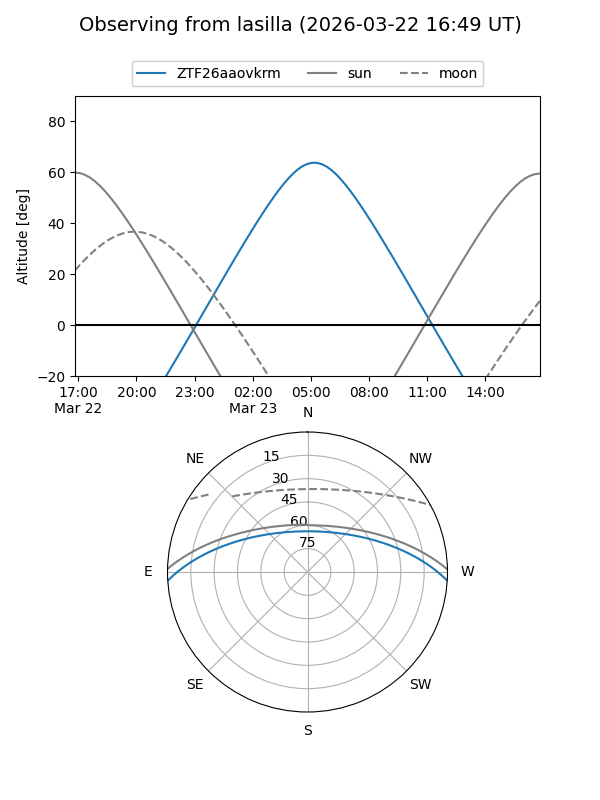
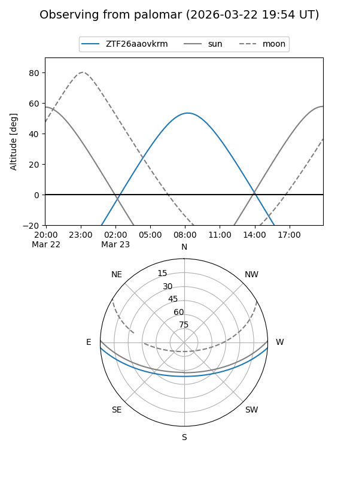

ZTF26aaovkrm
Target ZTF26aaovkrm at 2026-03-23 09:18
Aliases and brokers:
FINK: link
Lasair: link
ALeRCE: link
alt names
ZTF26aaovkrm (ztf,fink_ztf)
Coordinates:
equatorial (ra, dec) = 187.2361,-2.92445
equatorial (HMS+DMS) = 12:28:56.67,-02:55:28.03
galactic (l, b) = (291.8277,+59.46147)
Flags:
Photometry:
last ztfg=17.86
1 ztfg detections
Lightcurve
Visibility


Additional plots